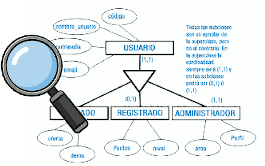
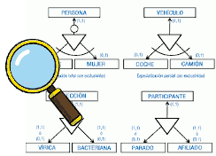

La generalització / especialització permet reflectir el fet que hi ha una entitat general, que denominem entitat superclasse, que es pot especialitzar en entitats subclasse:
generalización / especialización permite reflejar el hecho de que hay una entidad general, que denominamos entidad superclase, que se puede especializar en entidades subclase:
- L'entitat superclasse ens permet modelitzar les característiques comunes de l'entitat vista d'una forma genèrica.
- Les entitats subclasse ens permeten modelitzar les característiques pròpies de les seues especialitzacions.
És necessari que es complisca que tota ocurrència d'una entitat subclasse siga també una ocurrència de la seua entitat superclasse.
Generalització és quan partim d'entitats que tenen característiques comunes i obtenim una entitat nova que agrupa aquestes característiques.
Especialització és quan partim d'una entitat general i la dividim en altres més especialitzades.
Les jerarquies es caracteritzen per un concepte que hem de tindre en compte, l'herència. A través de l'herència els atributs d'una superclasse d'entitat són heretats per les subclasses. Si una superclasse intervé en una relació, les subclasses també ho faran.
En el nivell superior, en l'entitat superclasse, s'inclouran els camps comuns a totes les entitats especialitzades del nivell inferior. En cadascuna de les entitats subclasses es trobaran els camps específics a eixa entitat.
- Entitat Superclasse : és una entitat que representa un concepte ampli o abstracte que pot dividir-se en subconjunts més específics. Per exemple, "Vehicle" podria ser una entitat general.
-
Entitats Subclasse: són entitats més específiques que es deriven de l'entitat general. Per exemple, "Automòbil" i "Motocicleta" podrien ser entitats especialitzades de "Vehicle".
-
Atributs Comuns: Les entitats especialitzades hereten els atributs comuns de l'entitat general. En l'exemple, tant "Automòbil" com "Motocicleta" podrien tindre atributs comuns com a "Número de xassís" i "Número de motor".
-
Atributs Específics: Les entitats especialitzades poden tindre atributs específics que no s'apliquen a altres entitats especialitzades en la mateixa jerarquia. Per exemple, "Automòbil" podria tindre un atribut específic anomenat "Nombre de portes", que no s'aplica a "Motocicleta".
Una generalització/especialització podrà tindre les següents restriccions semàntiques:
- Totalitat: una generalització/especialització serà total si tot exemplar de la superclasse pertany a alguna de les subclasses.
- Parcialitat: una generalització/especialització serà parcial si no tots els exemplars de la superclase pertanyen a alguna de les subclasses.
- Solapament: una generalització/especialització presentarà solapament si un mateix exemplar de la superclase pot pertànyer a més d'una subclasse.
- Exclusivitat: una generalització/especialització presentarà exclusivitat si un mateix exemplar de la superclase pertany només a una subclasse.